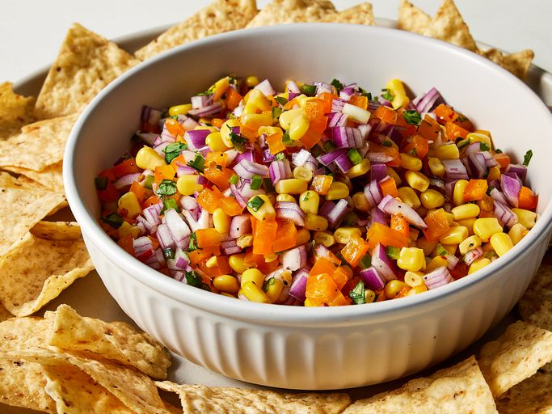

Corn salsa is a fresh, colorful condiment made primarily from sweet corn kernels, often combined with diced tomatoes, onions, peppers (such as jalapeño or bell peppers), and chopped cilantro. It’s typically dressed with lime juice, salt, and sometimes a splash of vinegar or olive oil, giving it a bright, tangy flavor that balances the natural sweetness of the corn. The texture is crisp and juicy, with a mix of crunch from the vegetables and a slight tenderness from the corn. Corn salsa can range from mild to spicy depending on the peppers used, and it’s commonly served as a topping or side for dishes like tacos, grilled meats, or tortilla chips.